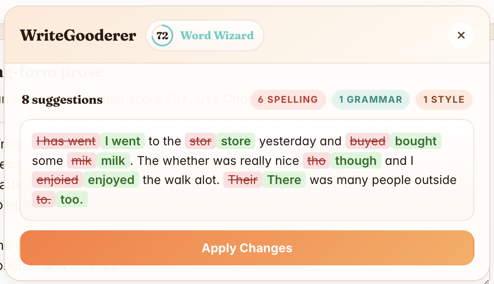

100% on-device
Runs on Chrome's built-in Gemini Nano. Zero network calls, zero accounts.
On-device proofreading and tone rewrites in Chrome, right where you type. Nothing you type leaves the browser.

Runs on Chrome's built-in Gemini Nano. Zero network calls, zero accounts.
See every grammar, spelling, and clarity fix before anything is applied.
Professional, Friendly, LinkedIn Influencer, and Passive Aggressive.
Click into any text field. A floating W shows up.
Open the card to proofread, see your Gooderness score, or pick a tone.
Look over the diff or rewrite, then apply it back into the field.
git clone https://github.com/victorhuangwq/WriteGooderer.git
chrome://extensions and turn on
Developer mode.
dist/ folder.
If the popup says the Prompt API is unavailable, check the requirements for the flag and on-device model setup.